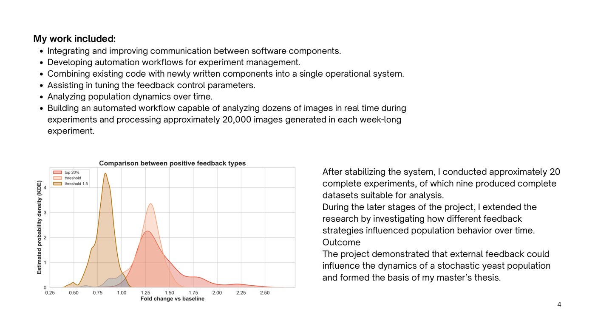

M.Sc. Thesis - Weizmann Institute of Science
Stabilizing Stochastic Phenotypes Using Real-Time Feedback Control
Investigated whether an external real-time feedback system could influence phenotypic distributions within a yeast population. The platform combined automated fluorescence microscopy, microfluidics, temperature control, live-cell imaging, and real-time image analysis.
- Integrated software components into a single operational workflow.
- Built automation for image analysis and experiment management.
- Processed approximately 20,000 images per week-long experiment.
- Conducted approximately 20 complete experiments; 9 yielded full datasets.